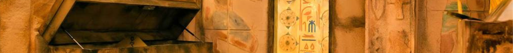

Egy régészexpedíció során egy eddig ismeretlen egyiptomi piramisra bukkantatok. A felfedezés azonban veszélyesnek bizonyul, amikor a bejárat mögöttetek lezárul. Az ősi falakon titkos jelek és rejtélyes mechanizmusok találhatók, amelyek csak a legfigyelmesebb kalandorok számára fedik fel titkaikat. Oldjátok meg a fáraó próbáit, kerüljétek el az ősi csapdákat, és találjátok meg a kijáratot, mielőtt az átkozott sír örökre foglyul ejt benneteket.

Játékidő: 60 perc Nehézség:★★★★ Ajánlott létszám: 2–6 fő Ajánlott korosztály: 10 éves kortól Kalandos és logikai feladatok